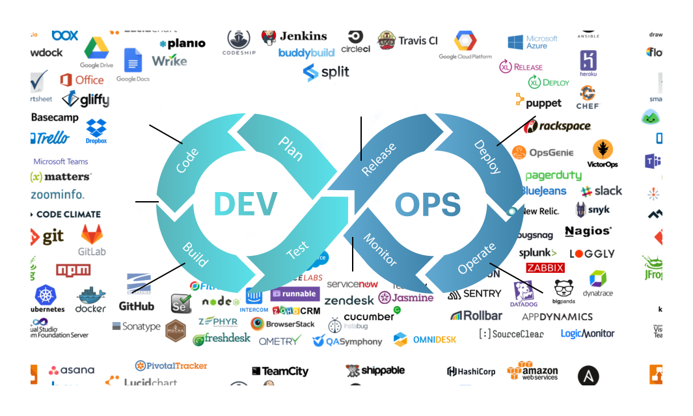

ls --color=always -l /binCI/CD
Solutions de déploiements continus
🇫🇷 ESGI Lyon - M2-IW-ALT-S1 2023
Présentation disponible à l’adresse: https://dduportal.github.io/dduportal/esgi-courses/2023-S1-M2-IW
Version PDF de la présentation : Cliquez ici
Contenu sous licence Creative Commons Attribution 4.0 International License
Une partie du contenu provient de https://github.com/cicd-lectures/slides (auteurs: Julien Levesy et moi-même)
Code source de la présentation: https://github.com/dduportal/dduportal/esgi-courses
Comment utiliser cette présentation ?
Bonjour !
Damien DUPORTAL
Et vous ?
A propos du cours
Calendrier
Evaluation
Plan
Introduction
Avant : le cycle en V

What could go right?
Et dans la vraie vie c’est pire !

Copyright © https://www.projectcartoon.com under the Creative Commons Attribution 3.0 Unported License
Problématique
Agile
Travailler par petites itérations complètes
Commencer petit
Confronter le logiciel au plus tôt aux utilisateurs.
Refaire des hypothèses basées sur ce que l’on à appris, et recommencer !
"Embrasser" le changement : Votre logiciel va changer en continu

Manifeste Agile
La clé : gérer le changement!
Say Hello to DevOps
Heureusement, vous avez des outils à disposition !


Préparer votre environnement de travail
Outils Nécessaires 🛠
GitPod
Démarrer avec GitPod 🚀
Autorisations demandées par GitPod 🔓
Lors de votre première connexion, GitPod va vous demander l’accès (à accepter) à votre email public configuré dans GitHub :

⚠️ Passez à la slide suivante avant d’aller plus loin
Validation du Compte GitPod 📱
GitPod vous demande votre numéro de téléphone mobile afin d’éviter les abus (service gratuit). Saisissez un numéro de téléphone valide pour recevoir par SMS un code de déblocage :

⚠️ Passez à la slide suivante avant d’aller plus loin
Choix de l’Éditeur de Code ✎
Choisissez l’éditeur "VSCode Browser" (la première tuile) :

⚠️ Passez à la slide suivante avant d’aller plus loin
Workspaces GitPod 🗂
Vous arrivez sur la page listant les "workspaces" GitPod :
Un workspace est une instance d’un environnement de travail virtuel (C’est un ordinateur distant)
⚠ Faites attention à réutiliser le même workspace tout au long de ce cours⚠

Permissions GitPod <→ GitHub 🔐
Démarrer l’environnement GitPod
Cliquez sur le bouton ci-dessous pour démarrer un environnement GitPod personnalisé:

Après quelques secondes (minutes?), vous avez accès à l’environnement:
Gauche: navigateur de fichiers ("Workspace")
Haut: éditeur de texte ("Get Started")
Bas: Terminal interactif
À droite en bas: plein de popups à ignorer (ou pas?)
Source disponible dans : https://github.com/dduportal/esgi-gitpod
Checkpoint 🎯
Ligne de commande
🤔 Problématique
CLI
REPL
Anatomie d’une commande
Manuel des commande
Raccourcis
Commandes de base 1/2
Commandes de base 2/2
Arborescence de fichiers 1/2
Le système de fichier a une structure d’arbre
La racine du disque dur c’est
/: 🎓ls -l /Le séparateur c’est également
/: 🎓ls -l /usr/bin
Deux types de chemins :
Absolu (depuis la racine): Commence par
/(Ex./usr/bin)Sinon c’est relatif (e.g. depuis le dossier courant) (Ex
./binoulocal/bin/)

Arborescence de fichiers 2/2
Un language (?)
Codes de sortie
Entrée, sortie standard et d’erreur

ls -l /tmp
echo "Hello" > /tmp/hello.txt
ls -l /tmp
ls -l /tmp >/dev/null
ls -l /tmp 1>/dev/null
ls -l /do_not_exist
ls -l /do_not_exist 1>/dev/null
ls -l /do_not_exist 2>/dev/null
ls -l /tmp /do_not_exist
ls -l /tmp /do_not_exist 1>/dev/null 2>&1Pipelines
Exécution 1/2
Exécution 2/2
Git
🤔 Problématique
Tracer le changement dans le code
Pourquoi un VCS ?
Concepts des VCS


Quel VCS utiliser ?

Nous allons utiliser Git
Git
Git is a free and open source distributed version control system designed to handle everything from small to very large projects with speed and efficiency.
Les 3 états avec Git
L’historique ("Version Database") : dossier
.gitDossier de votre projet ("Working Directory") - Commande
La zone d’index ("Staging Area")

Source : https://git-scm.com/book/fr/v2/D%C3%A9marrage-rapide-Rudiments-de-Git#les_trois%C3%A9tats
🎓 Exercice avec Git - 1.1
✅ Solution de l’exercice avec Git - 1.1
🎓 Exercice avec Git - 1.2
✅ Solution de l’exercice avec Git - 1.2
Terminologie de Git - Diff et changeset
diff: un ensemble de lignes "changées" sur un fichier donné

changeset: un ensemble de "diff" (donc peut couvrir plusieurs fichiers)

Terminologie de Git - Commit
commit: un changeset qui possède un (commit) parent, associé à un message

"HEAD": C’est le dernier commit dans l’historique


🎓 Exercice avec Git - 2
✅ Solution de l’exercice avec Git - 2
Terminologie de Git - Branche
Abstraction d’une version "isolée" du code
Concrètement, une branche est un alias pointant vers un "commit"

🎓 Exercice avec Git - 3
✅ Solution de l’exercice avec Git - 3
Terminologie de Git - Merge
On intègre une branche dans une autre en effectuant un merge
Un nouveau commit est créé, fruit de la combinaison de 2 autres commits

🎓 Exercice avec Git - 4
✅ Solution de l’exercice avec Git - 4
Feature Branch Flow
Une seule branche par fonctionnalité

Exemple d’usages de VCS
Checkpoint 🎯
Intégration Continue (CI)
Pourquoi la CI ?
But : Détecter les fautes au plus tôt pour en limiter le coût

Qu’est ce que l’Intégration Continue ?
Et concrètement ?

Un•e dévelopeu•se•r ajoute du code/branche/PR :
une requête HTTP est envoyée au système de "CI"
Le système de CI compile et teste le code
On ferme la boucle : Le résultat est renvoyé au dévelopeu•se•r•s
Quelques moteurs de CI connus
GitHub Actions
Anatomie de déclenchement de GitHub Actions
Concepts de GitHub Actions

Concepts de GitHub Actions - Step 1/2

Concepts de GitHub Actions - Step 2/2
Concepts de GitHub Actions - Job 1/2

Concepts de GitHub Actions - Job 2/2
Concepts de GitHub Actions - Runner
Concepts de GitHub Actions - Workflow 1/2
Concepts de GitHub Actions - Workflow 2/2
Concepts de GitHub Actions - Évènement 1/2
Concepts de GitHub Actions - Évènement 2/2
Concepts de GitHub Actions : Exemple Complet
Essayons GitHub Actions
🎓 Exercice: Créez un dépôt (git dans) GitHub
🎓 Exercice: Récupérez le dépôt dans Gitpod
🎓 Exercice: Exemple simple avec GitHub Actions
🎓 Exercice: Exemple simple avec GitHub Actions : Récapépète
Exemple GitHub Actions : Checkout
🎓 Exercice GitHub Actions : Checkout
✅ Solution GitHub Actions : Checkout
Exemple : Environnement d’exécution
🎓 Exercice : Personnalisation dans le workflow
✅ Solution : Personnalisation dans le workflow
Checkpoint 🎯
CI: Application d’exemple
Application "Say Hello"
🎓 Exercice : Essayons cette application dans GitPod
🤔 Cycle de vie / Pipeline
🎓 Exercice : Mise en place d’un cycle de vie 1/2
🎓 Exercice : Mise en place d’un cycle de vie 2/2
🎓 Exercice : Lint de l’application dans GitPod
🎯 Checkpoint
🎓 Exercice : Mise en place du CI Node/NPM
✅ Solution : Mise en place du CI Node/NPM
🤔 Environnement d’exécution du CI
🎓 Exercice : CI avec le tooling NodeJS
✅ Solution : CI avec le tooling NodeJS
🎓 Exercice : Corriger le CI
Checkpoint 🎯
Plus de Git !
🤔 Une petite histoire

Testé, pas approuvé.
Comment éviter ça ?
Gestion de version décentralisée
Centralisé vs Décentralisé

🎓 Consulter l’historique de commits
✅ Consulter l’historique de commits
Associer un dépôt distant (1/2)
Associer un dépôt distant (2/2)
Publier une branche dans sur dépôt distant
Que s’est il passé ?
Refaisons un commit !

Branche distante
🎓 Créez un commit depuis GitHub directement
✅ Rapatrier les changements distants

Branche Distante VS Branche Locale

Git(Hub|Lab|tea|…)
Checkpoint 🎯
Git à plusieurs
Limites de travailler seul

Travailler en équipe ? Une si bonne idée ?
Git multijoueur
… et (souvent) ça finit comme ça !

Un Example de Git Flow
Gestion des branches
Gestion des branches

Gestion des remotes
Plusieurs modèles possibles
Un remote pour les gouverner tous

Chacun son propre remote
Forks ! Forks everywhere !
Docker
Pourquoi ?
🤔 Quel est le problème ?

Problème de temps exponentiel
Déjà vu ?
L’IT n’est pas la seule industrie à résoudre des problèmes…

Solution: Le conteneur intermodal
"Separation of Concerns"

Comment ça marche ?
"Virtualisation Légère"

Conteneur != VM
"Separation of concerns": 1 "tâche" par conteneur

VMs && Conteneurs
Non exclusifs mutuellement

Comment ça marche ?
🎓 Exercice : Votre premier conteneur
🩻 Anatomie
🎓 Exercice : Où est mon conteneur ?
✅ Solution : Où est mon conteneur ?
🎓 Exercice : Cycle de vie d’un conteneur simple
✅ Solution : Cycle de vie d’un conteneur simple
🤔 Que contient "hello-world" ?
Docker Hub
🎓 Exercice : conteneur interactif
✅ Solution : conteneur interactif
🎓 Exercice : conteneur en tâche de fond
✅ Solution : conteneur en tâche de fond
Checkpoint 🎯
Docker Images
🤔 Pourquoi des images ?
🤔 Application Auto-Suffisante ?

C’est quoi le principe ?

🤔 Pourquoi fabriquer sa propre image ?
🎓 Fabriquer sa première image
✅ Fabriquer sa première image
Conventions de nommage des images
Conventions de nommage : Exemples
🎓 Mettre à jour votre image (1.1.0)
✅ Mettre à jour votre image (1.1.0)
Cache d’images & Layers
=> CACHED [2/3] RUN apt-get update && apt-get install --yes --no-install-recommends git 0.0s🤔 En fait, Docker n’a PAS exécuté cette commande la seconde fois ⇒ ça va beaucoup plus vite !

🎓 Essayez de voir les layers avec (dans Gitpod) dive <image>:<tag>
🎓 Cache d’images & Layers
✅ Cache d’images & Layers
Checkpoint 🎯
CI avec Docker Images
Personnaliser l’environnement GitHub Actions
🎓 Exercice : Environnement préfabriqué simple
✅ Solution : Environnement préfabriqué simple
🎓 Exercice : Environnement préfabriqué local
✅ Exercice : Environnement préfabriqué local
🤔 Réfléchissons ensemble
Checkpoint 🎯
GitHub Forks
🎓 Exercice: Créez un fork
Nous allons vous faire forker vos dépôts respectifs
Trouvez vous un binôme dans le groupe et échangez vos URL de dépôts
Depuis la page du dépôt de votre binôme, cliquez en haut à droite sur le bouton Fork.